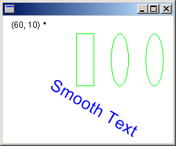

The Image class provides basic methods for loading and displaying raster images and vector images. The Metafile class, which inherits from the Image class, provides more specialized methods for recording, displaying, and examining vector images.
To display a vector image (metafile) on the screen, you need an Image object and a Graphics object. Pass the name of a file (or a pointer to a stream) to an Image constructor. After you have created an Image object, pass the address of that Image object to the DrawImage method of a Graphics object.
The following example creates an Image object from an EMF (enhanced metafile) file and then draws the image with its upper-left corner at (60, 10):
Image image(L"SampleMetafile.emf");
graphics.DrawImage(&image, 60, 10);
The following illustration shows the image drawn at the specified location.

Â
Â